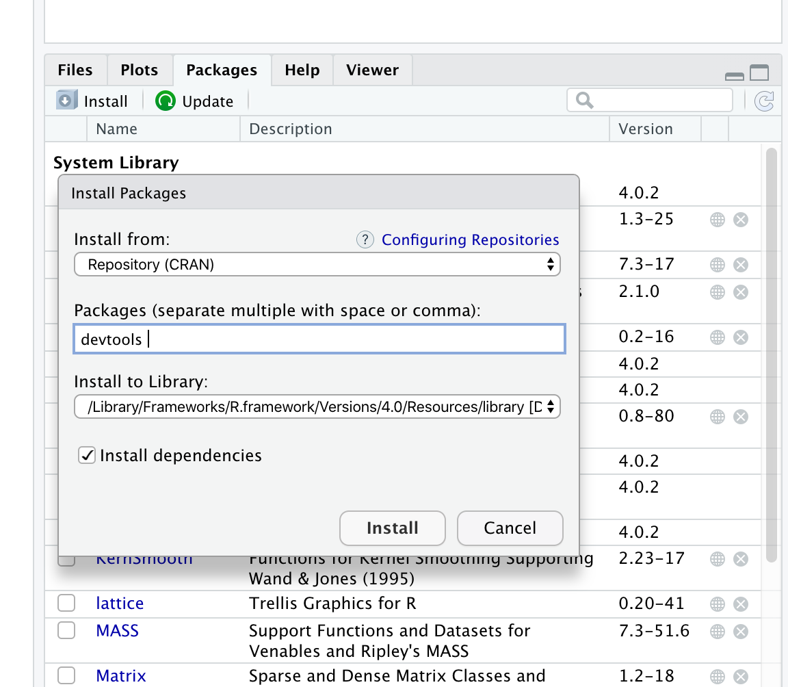

Appendix A — Installing what you need
The primary purpose of this course is to help you to understand how to use statistics that will help with your research. The course will try to explain statistics using the same path through the topic that statistics students are educated along, but without the rigorous mathematical background necessary for those students. Instead this course will focus on making you aware of the major concepts and help you to be a better user of statistics in your research.
Statistics is a computationally heavy topic, so we’ll be making use of the R statistical programming environment to do that side of the work. The rest of this chapter will help you get that set up on your own computer.
A.1 Prerequisites
A.1.1 Knowledge prerequisites
There are no specific knowledge prerequisites for this book but it will help if you have heard of some common statistical tests, like t, ANOVA and regression. It’ll also be helpful for following some of the code examples if you are familiar with basic R use.
A.1.2 Software prerequisites
You need to install the following stuff for this book:
- R
- RStudio
- Some R packages:
devtoolsanditssl
A.2 Installing R
Follow this link and install the right version for your operating system https://www.stats.bris.ac.uk/R/
A.3 Installing RStudio
Follow this link and install the right version for your operating system https://www.rstudio.com/products/rstudio/download/
A.4 Installing R packages in RStudio.
A.4.1 Standard packages - devtools
devtools is a standard R package and can be installed like any other you may have done from CRAN. Start RStudio and use the Packages tab in lower right panel. Click the install button (top left of the panel) and enter the package name, then click install as in this picture

A.4.2 Development packages - itssl
itssl is a new package that contains all the materials including the exercises for this handbook. As it is a development package you need to install it using devtools.
- In the
Consoletab in the lower left panel of RStudio typedevtools::install_github("danmaclean/itssl")
You may get asked to install newer versions of packages, select 1. All for these questions.
You may get asked whether you wish to install the newest version from source, decline this option and install binaries by selecting the appropriate option
A.5 Using the itssl package
itssl is a package developed solely to accompany this course. Once it is installed you can load it as usual - library(itssl)
All the functions in itssl follow this naming scheme its_<something-something>_time() so you’ll be able to spot them as you read along. The main purpose of the functions is to make the course easier to follow and stop us from getting bogged down in a lot of circumstantial code that isn’t directly related to our current point, which will usually be statistical rather than related to programming, hence you’ll be able to get a lot out of this course even if you haven’t used much R before.
If you do have a desire to see the code inside the itssl functions it is available at https://github.com/danmaclean/itssl/tree/master/R